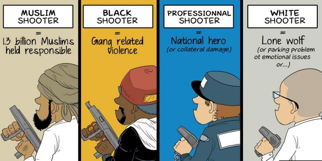

Too often, Muslims are seen as terrorists and Islam as the religion of terrorism. Some media outlets foster misinformation and hate by conflating Islam and Islamism. As a Muslim myself, I am tired of hearing all the misconceptions around Muslims and Islam. Every time an act of terror or shooting occurs, Muslims closely watch the news with extreme trepidation praying that the suspect is not Muslim. This is not because these terrorists are likely to be Muslim but rather because in the instances where they happen to be, we see amplified mass media coverage and extreme unjustified hatred towards Muslims. I am tired of hearing the phrase “Mentally disabled” being used instead of “terrorist” when the suspect in an attack is not Muslim. It is time to silence this islamophobia with facts and stats. I read a lot of articles, gathered statistics and visualized them to help make sense of the situation in my next five points.
When a drunk driver causes a car accident, we never blame the car manufacturer for the violent actions of that driver. This is because we understand that we cannot blame an entire car company that produces millions of safe vehicles just because one of their cars was hijacked by a reckless person who used it to cause harm. So what right do we have to blame an entire religion of over 1.6 Billion peaceful people because of the actions of a relatively insignificant few?